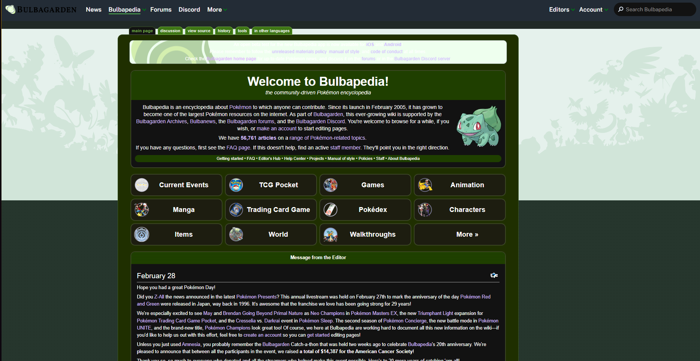

Evaluation of Bulbapedia

- We will be evaluating Bulbapedia.
- The websites target audience are pokemon fans who want to know more about the game, like stats and moves.
- The Site uses Hiearchical Organization.
- The Crap priniciple Repitition is used to make the website consitent.
- Bulbapedia is a great website because it has a lot of information about Pokemon.
- Unfortunately the has a low accessibility score of 59%.
- With 131 critical issues blind, deafblind, low vision, and low contrast are affected by the lack of accessibility.
- I would say Bulbapedia is an effective website and supports its user in completing actions accurately.
- I would also that after using the site efficent and easy to use.
- It is also pleasant to use and appropriate.
- I feel that Bulbapedia could use a UI/UX design update to make it more accessible and to improve the design of the website.
- Link to Bulbapedia